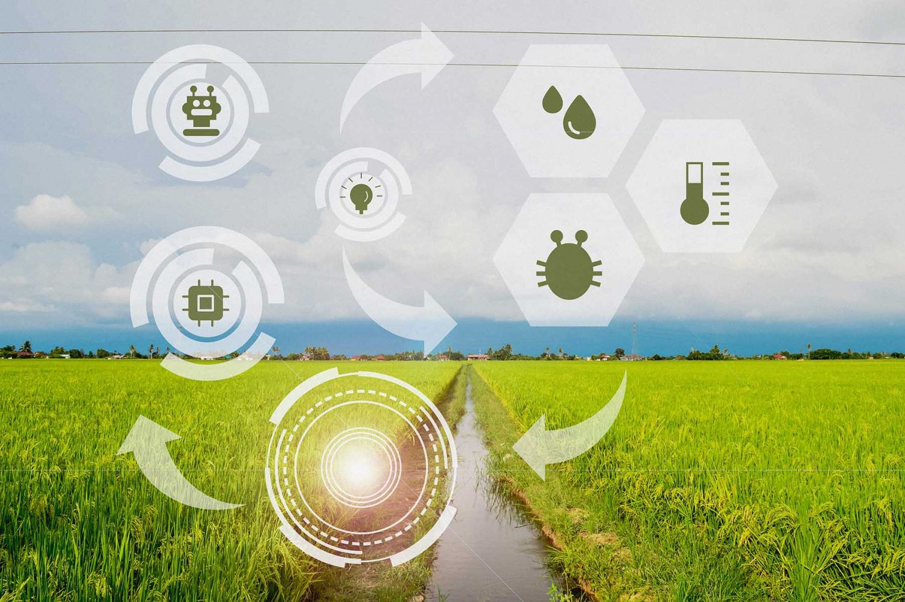

Generamos actividades de protección al medio ambiente, tales como Conservación, protección, mitigación de contaminación, mejoramiento climático, producción de oxígeno, aprovechamiento de los recursos naturales y creación de flora, así como el mejoramiento de los suelos por medio de los arboles nativos y apoyar a las familias que dependen de nuestro proyecto.
Proporcionar toda clase de asesorías por medio de sistemas de operación computacional; mantenimiento, manejo, cuidado de nuestras plantas incluyendo guías virtuales, videos, textos, audios, entre otros. Supervisión y dirección del crecimiento de las mismas por cualquier medio o forma de comunicación pública o privada o a través de cualquier sistema de expresión conocido o por conocerse, servicios vía computadora, vía el sistema global de información conocido como “Internet”

producir, asesorar y difundir todo plan, programa o proyecto institucional, privado, público o territorial que genere bienestar social y productivo para la comunidad urbana y rural, en cualquiera de las áreas administrativas, de infraestructura económica, de bienestar y desarrollo social , de la producción agrícola, agroindustrial, comercial, intelectual y empresarial, etc.; desde el orden de la consultoría y asesoría profesional o en cualquier actividad de orden intelectual, científico, tecnológico o lúdico que sea constructiva o en cualquiera actividad profesional que se pueda concretar en la materialización de proyectos y procesos en el país, siempre en una marco de aplicación de Responsabilidad Social y Ambiental.